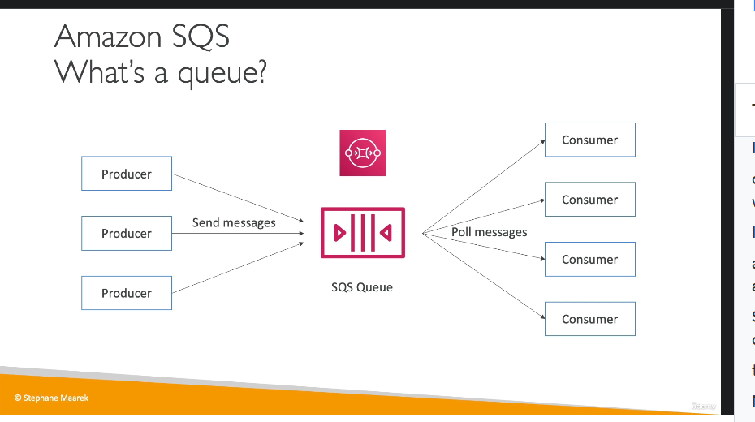

Sqs
1. Tổng quan về SQS
- Amazon SQS (Simple Queue Service):
 - Là dịch vụ quản lý hàng đợi, giúp decouple giữa producer và consumer.
- Tích hợp tốt để xử lý dữ liệu bất đồng bộ.
2. Thành phần chính của SQS
-
Producer:
-
Là nguồn gửi thông điệp vào hàng đợi.
- Có thể có một hoặc nhiều producer.
- Sử dụng API
SendMessageđể gửi thông điệp. -
Ví dụ: Gửi thông điệp chứa thông tin đặt hàng hoặc video cần xử lý.
-
Queue:
-
Chứa các thông điệp mà producer gửi vào.
-
Các đặc điểm của queue:
- Thời gian lưu trữ (Retention period):
- Mặc định là 4 ngày, tối đa 14 ngày.
- Thông điệp cần được xử lý và xóa trong thời gian này, nếu không sẽ bị mất.
- Kích thước thông điệp: Tối đa 256 KB.
- Throughput không giới hạn: Không giới hạn số lượng thông điệp hay tốc độ gửi nhận.
- Độ trễ thấp: Thời gian xử lý <10ms.
- Giao nhận thông điệp:
- At least once delivery: Có thể có thông điệp trùng lặp.
- Best effort ordering: Thứ tự thông điệp không được đảm bảo.
-
Consumer:

- Là ứng dụng nhận và xử lý thông điệp từ queue.
-
Cách thức hoạt động:
- Consumer poll (hỏi) queue để nhận thông điệp (tối đa 10 thông điệp/lần).
- Sau khi xử lý thông điệp (ví dụ: lưu dữ liệu vào database), consumer gọi API
DeleteMessageđể xóa thông điệp khỏi queue. - Xóa thông điệp giúp đảm bảo không có consumer khác xử lý lại cùng một thông điệp.
-
Consumer có thể chạy trên:
- EC2 instances (máy chủ ảo AWS).
- On-premises servers (máy chủ tại chỗ).
- AWS Lambda (serverless).
3. Use Case cho SQS
- Xử lý đặt hàng:
- Producer gửi thông điệp chứa thông tin như order ID, customer ID, địa chỉ vào queue.
- Consumer nhận thông điệp, lưu vào database (ví dụ: Amazon RDS), rồi xóa thông điệp khỏi queue.
4. Lợi ích của SQS
- Decouple ứng dụng: Giúp các thành phần độc lập, giảm phụ thuộc lẫn nhau.
- Khả năng mở rộng: Tự động scale để xử lý lưu lượng lớn.
- Độ tin cậy: Dữ liệu trong queue được lưu trữ bền vững cho đến khi consumer xóa.
Tóm Tắt Cô Đọng
-
Thành phần SQS:
-
Producer gửi thông điệp vào queue.
- Queue lưu thông điệp (thời gian lưu trữ tối đa 14 ngày, kích thước <256KB).
-
Consumer nhận, xử lý, và xóa thông điệp.
-
Tính năng nổi bật:
-
Throughput không giới hạn, độ trễ thấp (<10ms).
-
Giao nhận thông điệp "At least once", có thể trùng lặp hoặc sai thứ tự.
-
Ứng dụng:
-
Phù hợp cho xử lý bất đồng bộ, ví dụ như đặt hàng, xử lý video, gửi thông báo.
-
Ưu điểm: Decouple ứng dụng, hỗ trợ scale tự động, đáng tin cậy.
1. Mở rộng quy mô (Scaling)
-
Nhiều Consumers:

-
Có thể triển khai nhiều consumer để xử lý thông điệp đồng thời, tăng throughput.
- Các consumer sẽ gọi hàm poll để nhận thông điệp khác nhau.
-
Nếu một consumer xử lý thông điệp chậm, thông điệp sẽ được các consumer khác nhận, đảm bảo at least once delivery.
-
Horizontal-Scaling:
- Khi lưu lượng thông điệp tăng, thêm consumer thông qua Auto Scaling Group (ASG).
- ASG sử dụng Queue Length (ApproximateNumberOfMessages) trong CloudWatch làm metric để tăng/giảm số lượng EC2 instances.
- Ví dụ: Khi có surge (đột biến) trong đơn hàng, ASG sẽ tạo thêm EC2 instances để xử lý thông điệp nhanh hơn.
2. Use Case thực tế: Xử lý video
-
Vấn đề:
-
Nếu xử lý video trực tiếp trong front-end, website sẽ chậm do tải lớn từ việc xử lý video.
-
Giải pháp sử dụng SQS:
- Front-end:
- Gửi yêu cầu xử lý video vào SQS queue.
- Sử dụng EC2 instances tối ưu cho front-end (ví dụ: hiệu năng tốt, chi phí thấp).
- Back-end:
- Consumer trong ASG sẽ nhận thông điệp từ SQS, xử lý video, và lưu vào S3 bucket.
- Sử dụng EC2 instances có GPU để tối ưu hóa xử lý video.
- Kết quả:
- Front-end và back-end hoạt động độc lập, scale riêng biệt, đảm bảo hiệu năng.
- Queue với throughput không giới hạn đảm bảo tính ổn định khi lưu lượng tăng cao.
3. Bảo mật trong SQS
- Encryption (Mã hóa):
- In-flight encryption: Mã hóa dữ liệu trong quá trình truyền với HTTPS.
- At-rest encryption: Sử dụng AWS KMS keys để mã hóa dữ liệu lưu trữ.
- Client-side encryption:
- Tùy chọn mã hóa/giải mã trên client, không được hỗ trợ trực tiếp bởi SQS.
- Access Control:
- IAM Policies: Quản lý quyền truy cập API của SQS.
- SQS Access Policies:
- Tương tự S3 bucket policies.
- Hữu ích trong trường hợp cross-account access hoặc tích hợp với dịch vụ khác (ví dụ: SNS, S3).
Tóm Tắt Cô Đọng
-
Mở rộng quy mô:
-
SQS hỗ trợ nhiều consumer hoạt động song song, giúp xử lý thông điệp nhanh chóng.
-
Sử dụng ASG kết hợp CloudWatch để tự động scale theo lưu lượng.
-
Use Case chính:
-
Tách biệt front-end và back-end trong ứng dụng xử lý video.
-
Front-end xử lý yêu cầu, back-end nhận thông điệp từ SQS để xử lý video, đảm bảo hiệu năng và tối ưu hóa tài nguyên.
-
Bảo mật:
-
Mã hóa in-flight và at-rest.
-
Access control qua IAM và SQS policies, hỗ trợ cross-account và tích hợp dịch vụ khác.
-
Lợi ích SQS:
- Giảm phụ thuộc giữa các thành phần ứng dụng (decouple).
- Đảm bảo tính ổn định và khả năng mở rộng trong mọi trường hợp lưu lượng lớn.